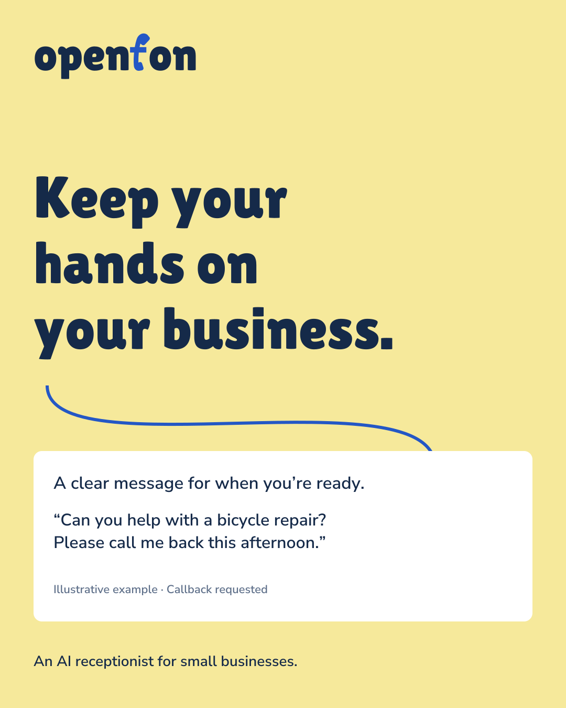

A message, clearly left.
Brand identity / Edition one
A warm welcome.
A clear next step.
An AI receptionist for small businesses.
A little room to focus on the work in front of you.
“Can you help
with a repair?”
Illustrative example · A request, not a completed callback.
WelcomingCapablePlainspokenAttentiveOpen
The direction
For the people
doing the work.
An inquiry arrives while the owner is helping someone else. OpenFon gives that conversation a place to start—and the owner a clear message to come back to.
We lead with the useful exchange: an answer from approved business information, or a message when the answer isn’t there. The technology stays understandable and configurable.
Business owners
A welcoming first response. A clear record. Control over what the receptionist says.
Agencies & implementers
Provider choices and reusable setup, with the business’s everyday work kept in view.
The product truth behind the brand
Teach → choose a voice → test in the browser → share → review. These are the core product steps. Telephone rollout, calendar booking and physical audio acceptance have separate requirements. This identity makes no new availability, customer, pricing or performance claims.
The visual identity
Familiar, with a twist.
The telephone lives in the name.
The space after it is just right.

The shape stays. Lilita One, a 5° handset tilt, horizontal crossbar and compact foot. Use the supplied paths.
Give it room. Clear space: half the lowercase “o” height. Minimum digital width: 120px.
Small spaces.
The same handset-f, on a blue field.
Color
Blue says hello.
Butter leaves a note.
A confident welcome, a warm accent
and plenty of room to read.
White on blue. Ink on butter. Dark text on a light working surface.
All documented reading pairs meet WCAG AA for normal text.
Type
Character up front.
Clarity all the way.
Lilita One / Display
Hello,
how can
we help?
Short headlines and the wordmark.
One clear thought, with personality.
Nunito Sans / Reading & labels
A good conversation
starts with the details.
Opening hours. The services you offer. The questions you hear most. Give your receptionist a useful starting point, then try a conversation yourself.
Aa Bb Cc Dd Ee Ff Gg
0123456789 · Ä Ö Ü ß
Open shapes. Clear labels. Room to read.
Our voice
Warmth, with
the right words.
A helpful colleague’s rhythm.
Concrete words. Honest limits.
Introducing OpenFon
A warm welcome. A clear next step.
An AI receptionist for small businesses.
Say what happens.
“Callback requested.”
Keep the promise real.
“May I take a message?”
Make recovery clear.
“Try again.”
German examples use Sie. A business’s own receptionist can use its chosen tone. Open the writing guide ↗
Out in the world
Made for real
working days.
People doing their work.
Messages that make the next step clear.
AI-generated illustration; not an OpenFon customer.

Product
One clear task. Precise statuses. Functional icons.
Campaigns
A familiar moment, a useful response and one invitation.
Presentations & email
The wordmark, clean type and a concrete next step.
The working kit
Ready to put
to work.
The approved logo and a complete first identity system.
Local files, editable vectors, licensed fonts and clear rules.